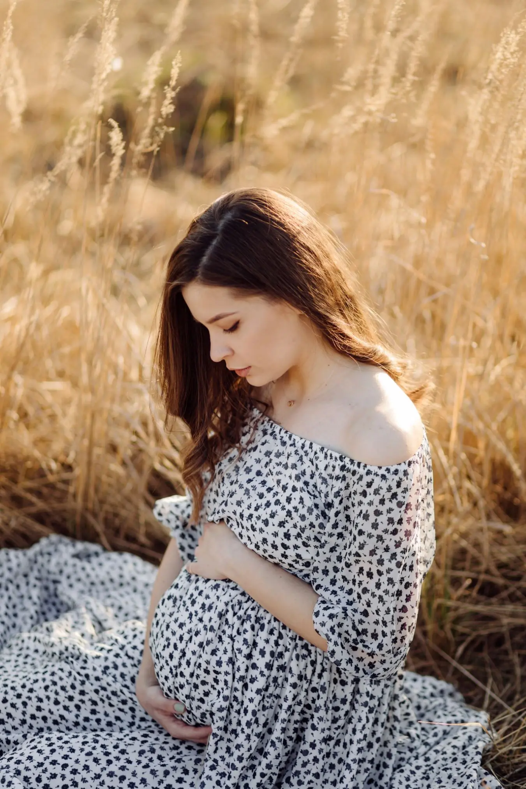

Maternity
5 Reasons to Take Part in a Maternity Photo Shoot
Pregnancy is a fleeting, magical time. Discover why documenting this beautiful journey is a gift you will cherish for the rest of your life.
- 01. Celebrating Your Body: Pregnancy is absolute magic. It’s a wonderful reminder of how powerful and beautiful your body truly is.
- 02. Capturing the Anticipation: The quiet moments, the shared smiles, and the pure excitement before your life changes forever.
- 03. A Keepsake for Your Child: Years from now, your child will love seeing these beautiful photos of their mother carrying them.
- 04. Professional Styling: It’s a perfect excuse to get pampered, wear a gorgeous gown, and feel like the queen you are.
- 05. Time Out for Yourself: The session is a peaceful, slow space where you can connect deeply with your baby.